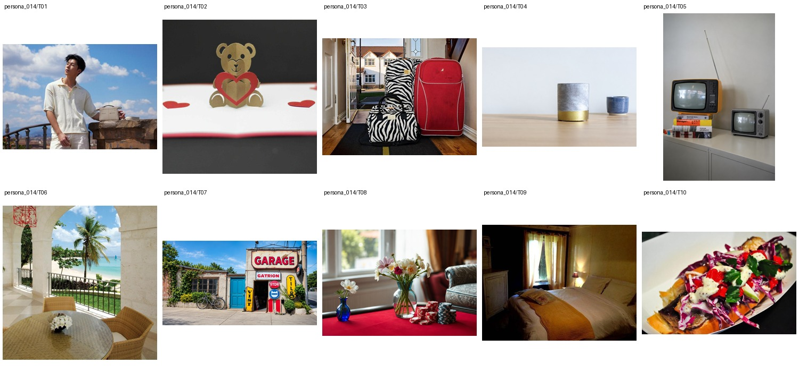

Freelance video editor and live-event AV technician · Vocational certificate in digital media production · 未提供数值年龄；按职业与教育背景推定为成年人
Widad is a transgender woman and trans lesbian who cuts reaction vlogs and small comedy show recaps from her kitchen table between AV shifts at local theaters, usually with her daughter’s homework spread beside her laptop. Her half-finished Honda Civic build lives under a tarp in the driveway, and she relaxes by watching NFL clips, goofy dance videos, and Spider-Man: Miles Morales stream highlights. She loves generative art for thumbnails but gets defensive when people suggest AI should replace real musicians.
Retouch 1 · Attribute Modification 4 · Background 6 · Replace 5 · Move 1 · Add 2 · Restyle 1 · Remove 1
上层v3表达个性化编辑请求，底层列出操作、个性化参数及具体解析。125项global均不绑定题材或具体图片，由请求选择；人物基本信息、非global知识和图片保持不变。历史版本仅存internal；长期日常历史尚未构建。
整组图片与基础人物信息（已清理、统一字段）

{
"source": {
"dataset": "bowen-upenn/PersonaMem-v3",
"revision": "7b00a090b35b7293e6efeeb19494207f32b5a9ee",
"source_persona_id": "35",
"path": "backend/35/profile.json",
"raw_sha256": "24efbb732d7b838f6bcef9b532e46dd3956f2be0264bc978570700b90e69938e"
},
"basic_profile": {
"name": "Widad Kassis",
"age": null,
"gender": "transgender female, lesbian",
"nationality": null,
"languages": [],
"location": {
"city": null,
"region": null,
"country": null,
"description": null
},
"education": {
"degrees": [
"Vocational certificate in digital media production"
],
"fields": [],
"institutions": []
},
"occupation": {
"title": "Freelance video editor and live-event AV technician",
"organization": null,
"industry": null,
"status": null
},
"relationship_status": null,
"summary": null,
"biography": "Widad is a transgender woman and trans lesbian who cuts reaction vlogs and small comedy show recaps from her kitchen table between AV shifts at local theaters, usually with her daughter’s homework spread beside her laptop. Her half-finished Honda Civic build lives under a tarp in the driveway, and she relaxes by watching NFL clips, goofy dance videos, and Spider-Man: Miles Morales stream highlights. She loves generative art for thumbnails but gets defensive when people suggest AI should replace real musicians.",
"hobbies": [],
"personality": {
"traits": [],
"values": [],
"quirks": [],
"big_five": {
"openness": "low",
"conscientiousness": "low",
"extraversion": "medium",
"agreeableness": "medium",
"neuroticism": "high"
}
},
"additional": {
"social_connections": [
{
"friend_id": "friend_1",
"display_name": "Wafa Khoury",
"relationship_depth": "close",
"shared_interests": [
"weekend food projects",
"local theater",
"comedy recaps"
]
},
{
"friend_id": "friend_2",
"display_name": "Mireille Kattan",
"relationship_depth": "close",
"shared_interests": [
"video editing",
"dance videos",
"school parents"
]
},
{
"friend_id": "friend_3",
"display_name": "Wael Karaki",
"relationship_depth": "close",
"shared_interests": [
"Honda Civic builds",
"NFL clips",
"AV shifts"
]
},
{
"friend_id": "friend_4",
"display_name": "Wafa Karam",
"relationship_depth": "acquaintance",
"shared_interests": [
"local creators",
"music mutuals"
]
},
{
"friend_id": "friend_5",
"display_name": "Nadim Khazen",
"relationship_depth": "acquaintance",
"shared_interests": [
"live-event AV",
"comedy shows",
"theater people"
]
},
{
"friend_id": "friend_6",
"display_name": "Rania Qubti",
"relationship_depth": "acquaintance",
"shared_interests": [
"reaction vlogs",
"creator mutuals"
]
},
{
"friend_id": "friend_7",
"display_name": "Salma Koury",
"relationship_depth": "acquaintance",
"shared_interests": [
"school-adjacent parents",
"caramelized onions"
]
},
{
"friend_id": "friend_8",
"display_name": "Wissam Kheir",
"relationship_depth": "distant",
"shared_interests": [
"car people",
"Honda Civic builds"
]
},
{
"friend_id": "friend_9",
"display_name": "Layal Makhoul",
"relationship_depth": "distant",
"shared_interests": [
"music people",
"goofy dance videos"
]
},
{
"friend_id": "friend_10",
"display_name": "George Haddad",
"relationship_depth": "distant",
"shared_interests": [
"NFL clips",
"local comedy"
]
}
]
}
},
"adult_eligibility": {
"status": "adult",
"basis": "adult_career_and_education_context",
"inferred": true,
"numeric_age_provided": false
},
"persona_id": "persona_014"
}